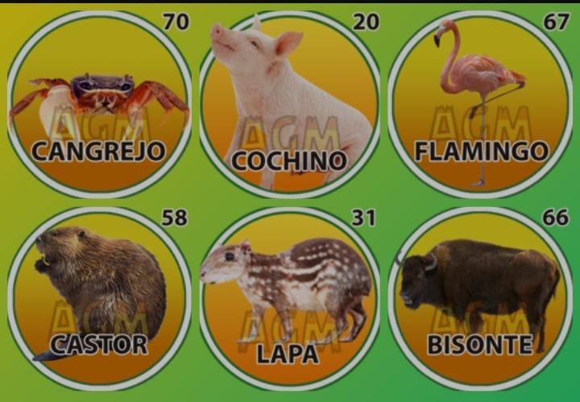
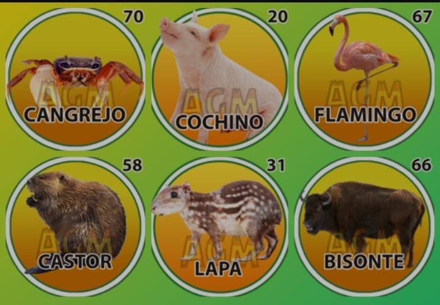

Que son las Finanzasüìå.
Finanzas,Inversiones,Ahorro,Dinero,Educación financiera,Economía,Bolsa de valores,Planificación financiera
!¿Las finanzas son una rama de la economía y de la administración que estudia el intercambio intertemporal de capital entre individuos, empresas, o Estados, con la incertidumbre y el riesgo que estas actividades conllevan. Se dedica al estudio de la obtención de capital para la inversión en bienes productivos y de las decisiones de inversión de los ahorradores.¡
Conceptos clave de las Finanzas:
cómo ahorrar dinero fácil,guía para invertir por primera vez,qué es un fondo de inversión,cómo hacer un presupuesto familiar,mejores formas de ahorrar para el futuro,consejos para salir de deudas,qué es la inflación y cómo me afecta.

El valor del dinero en el tiempo: Ante la misma cantidad de dinero, un inversor prefiere disponer de ella en el presente que en el futuro. Por ello, el transvase intertemporal de dinero cuenta con un factor de descuento (si intercambiamos renta futura por capital presente, por ejemplo, en un préstamo hipotecario), o con una rentabilidad (si ìntercambiamos renta presente por renta futura, por ejemplo, en un plan de pensiones).
Tasa de interés: y representa una tasa de intercambio entre el precio del dinero al día de hoy en términos del dinero futuro. En España la tasa de interés es conocida como el tipo de interés.
La relación entre liquidez e inversión: La necesidad de contar con dinero líquido tanto para el intercambio por bienes y servicios como para realizar una inversión hace que el mercado de la mercancía-dinero tenga su propia oferta y demanda, y sus propios costes y precios.
Costes de oportunidad: Hace referencia al sacrificio que debe hacer cualquier agente que participe en un mercado al decidir prescindir de un consumo o de una inversión para emplear sus recursos, siendo estos por definición escasos, en otro proyecto.
Inflación: Proceso económico que consiste en un aumento continuo de los precios de la mayor parte de los productos y servicios, y, por lo tanto, de una pérdida del valor del dinero para poder adquirir esos bienes y servicios, la inflación impacta principalmente a la economía de un país, es el nuevo costo de vida. La inflación tiene un impacto directo sobre la tasa de interés: puesto que la inflación reduce el valor del dinero, a mayor inflación, mayor es la tasa de interés necesaria para compensar a un ahorrador por prestar dinero al vecino.
Hora Actual
Cargando...
Cargando...
"üö®3 SUPER FIJOS"
 
Pago Movil.
Banco Mercantil: 0105.
Telef: 04248671967.
C.I: 14055604.
Monto: 100Bs
Enviar su capture al 04248671967

Pago Movil.
Banco Mercantil: 0105.
Telef: 04248671967.
C.I: 14055604.
Monto: 100Bs
Enviar su capture al 04248671967

¡Selva Plus".!
"VER Informacion"
¡Loto Rey".!
"VER Informacion"Dr.Animalitos / 06 ene, 2025
❤️¿Como hacer dinero facil:
Finanzas,Inversiones,Ahorro,Dinero,Educación financiera,Economía,Bolsa de valores,Planificación financiera
Cómo empezar a invertir con poco dinero,Qué es el interés compuesto,Cuánto dinero debo ahorrar al mes,Dónde invertir para obtener rentabilidad mensual,Cuál es la diferencia entre un banco y una fintech,Cómo funciona una hipoteca.
Gana dinero: Vende ropa de segunda mano...
Ganancias potenciales: de media entre el 25 % y el 40 % del precio original de la ropa y mucho más por artículos raros o vintage.
Mira en tu armario. ¿Cuántas prendas de ropa tienes que no has usado desde hace años? Siempre que estén en buen estado, podrías ganar dinero con ellas. Lo mejor de este trabajo es que puedes mantenerlo como algo a tiempo parcial que puedes hacer cada primavera, o convertirlo en un pequeño negocio.

Cuando hayas probado a vender tu propia ropa usada, puedes pensar en comprar y revender tus propias colecciones de ropa de segunda mano. Tus clientes pagarán un precio mayor por prendas difíciles de encontrar que hayas conseguido.
Cuando hayas probado a vender tu propia ropa usada, puedes pensar en comprar y revender tus propias colecciones de ropa de segunda mano. Tus clientes pagarán un precio mayor por prendas difíciles de encontrar que hayas conseguido.
Gana dinero: Cuidando niños...
Ganancias potenciales: entre 3 y 5 dolares diarios:
En Venezuela hay una gran demanda para el cuidado de niños. Durante generaciones, los padres han confiado en adolescentes (a menudo vecinos) para cuidar a sus hijos, pero los tiempos han cambiado, y los padres modernos son reacios a dejar que los niños cuiden de otros niños.
Esto significa que cada vez hay más trabajo de cuidado de niños para adultos. De hecho, un estudio reciente de Zippia muestra que la edad media de los cuidadores de niños es de 37 años.

Para aumentar tus posibilidades de contratación, puedes sacar certificaciones de la Cruz Roja en Primeros Auxilios, RCP y formación avanzada en cuidado infantil. Ahora, ya no necesitas que del boca a boca de tu vecindario. Hay todo tipo de aplicaciones y páginas web donde puedes registrarte para cuidar niños. Aquí tienes 4 que pueden ayudarte a empezar:
¡La Granjita".!
"VER Informacion"
!Ruleta Royal".!
"VER Informacion"
¡Granjazo Millonario".!
"VER Informacion"
¡Granja Millonaria".!
"VER Informacion"
!Loto Activo".!
"VER Informacion"
¡Guacharo Activo".!
"VER Informacion"Finanzas.
Finanzas,Inversiones,Ahorro,Dinero,Educación financiera,Economía,Bolsa de valores,Planificación financiera
Cómo empezar a invertir con poco dinero,Qué es el interés compuesto,Cuánto dinero debo ahorrar al mes,Dónde invertir para obtener rentabilidad mensual,Cuál es la diferencia entre un banco y una fintech,Cómo funciona una hipoteca.

Finanzas privadas:
Las finanzas personales se definen como "la planificación consciente del gasto y el ahorro monetarios, teniendo también en cuenta la posibilidad de riesgos futuros" Las finanzas personales pueden implicar el pago de la educación, la financiación de bienes duraderos como inmuebles y automóviles, la compra de seguros, la inversión y el ahorro para la jubilación:
Finanzas de empresas:
Las finanzas corporativas se ocupan de las medidas que toman los directivos para aumentar el valor de la empresa para los accionistas, las fuentes de financiación y la estructura de capital de las empresas, y las herramientas y análisis utilizados para asignar los recursos financieros. :
Finanzas públicas:
Esta finanza es la encargada de tratar de optimizar los objetivos económicos de un Estado (inversión, PIB, déficit, superávit, entre otras), mediante la estimación de las necesidades futuras y la asignación de fondos de acuerdo con la disponibilidad de fondos: